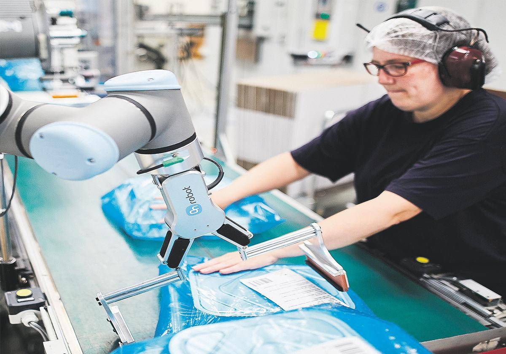
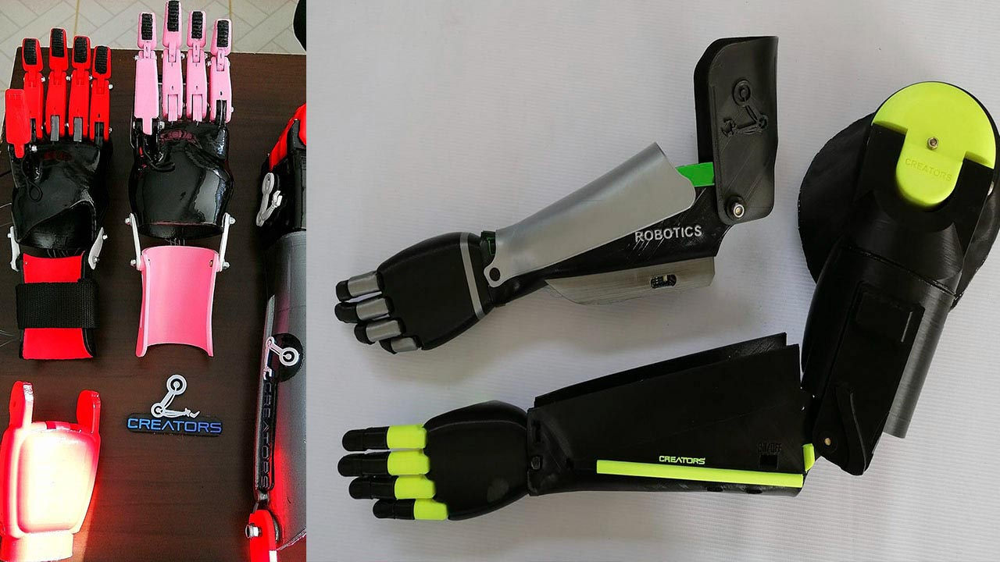

Innovaciones Futuras en la Robótica
Inteligencia Artificial Avanzada
La integración de IA avanzada permitirá que los robots aprendan y se adapten a nuevas situaciones, mejorando su autonomía y capacidad de respuesta en entornos cambiantes.
Robots Colaborativos (Cobots)
Los Cobots están diseñados para trabajar junto a humanos de manera segura y eficiente, optimizando procesos en fábricas y otros entornos laborales.
Robótica Autónoma

Drones y vehículos autónomos que podrían realizar entregas, inspecciones y misiones de rescate sin intervención humana, aumentando la eficiencia en diversos sectores.
Biomecánica y Prótesis
Innovaciones en robots que podrían integrarse con el cuerpo humano para mejorar la movilidad y la calidad de vida de personas con discapacidades.